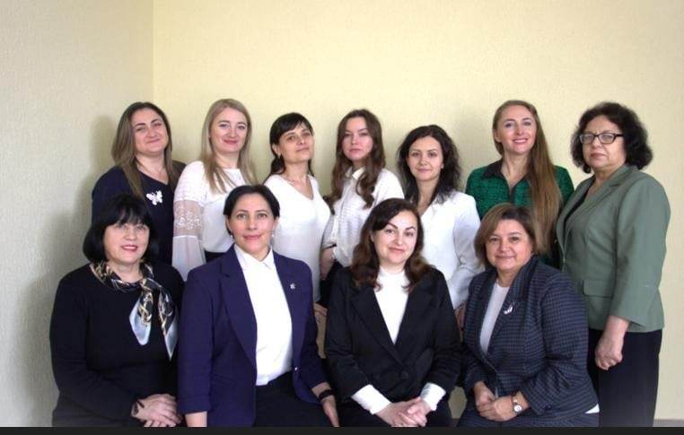

✕
„Pentru a-ți defini idea proprie de succes ai nevoie sa știi ce îți aduce bucurie , ce te face fericit și cum poți, în timp, să trăiești din această pasiune. Orice pasiune înseamnă multă muncă, poate chiar mai multă decât ai investi într-un job comun. Trebuie să fii determinat să investești în cursuri care mai de care, să înveți tot timpul, să citești, să capeți experiență și expertiză. Un profesor adevărat investește în dezvoltarea personală. Succesul în mare parte, stă în voința de a învinge; să ne străduim deci și să stăruim.”
Seneca
Tema de cercetare: „Aplicarea eficientă a instrumentelor de evaluare competențelor elevului în cadrul orelor de Limba Străină”
Obiective:
| N. | Nume, Prenume cadru didactic | Disciplina predată | Grad didactic |
| 1. | Cijova Tatiana | Limba engleză | Unu |
| 2. | Candu Natalia | Limba engleză | Unu |
| 3. | Orbu Galina | Limba engleză | Unu |
| 4 | Consantinov Liliana | Limba rusă | Unu |
| 5 | Roșca Mariana | Roșca Mariana | Doi |
| 6 | Iordăchescu Natalia | Limba engleză | Doi |
| 7 | Ungureanu Ana | Limba franceză | Doi |
| 8 | Levco Ecaterina | Limba franceză | Doi |
| 9 | Logvinenco Stela | Limba engleză | Doi |
| 10 | Miroliubov Nina | Limba rusă | Doi |
| 11 | Railean Ecaterina | Limba rusă | - |
Comisia Metodică „Limbi Străine” Care activează în cadrul Liceului Teoretic „Petre Ștefănucă” își propune să asigure calitatea procesului instructiv - educativ în concordanță cu noile cerințe a curriculumului. În acest context fiecare cadru didactic o deosebită atenție atrage la calitatea predării.
Profesorii sunt ocupați de realizarea curriculumului bazat pe competențe, învățământ centrat pe elev, familiarizarea cu noile culturi, formarea competențelor transdisciplinare, strategii didactice de integrare a competențelor lingvistice, sociolingvistice, pragmatice și pluri/inter culturale la limba străină. Proiectul educațional, implementarea metodelor de învățare a limbii străine, asimilarea materiei de studii, a gramaticii la nivel de conținut; asigurarea creșterii nivelului de cunoaștere și informare a elevilor, ceea ce le permite stabilirea nivelului de formare a competențelor, dezvoltarea celor patru deprinderi integratoare (audierea, lectura, comunicarea orală și scrisă). Un accent deosebit se pune pe dezvoltarea capacității de înțelegere și de comunicare într-o limbă străină, limba cheie în cadrul lecțiilor, fiind limbă engleză, franceză și rusă.
„Secretul bucuriei în muncă constă într-un singur cuvânt - excelență. A ști cum să faci ceva bine înseamnă a te bucura de aceasta.”
Pearl Buck